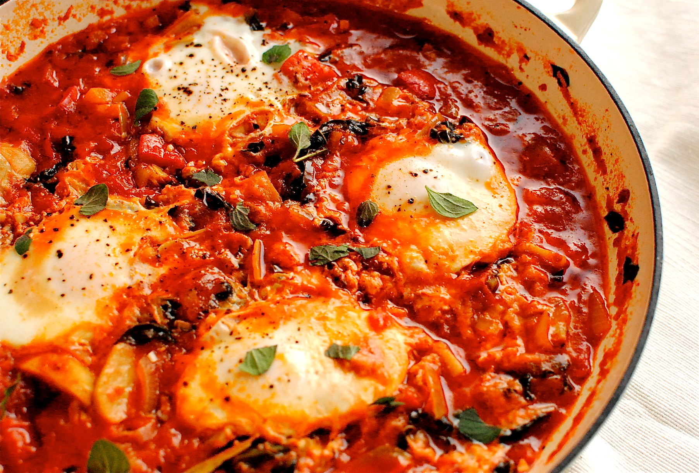

Shakshuka Recipe

Description
Shakshuka is a savory and satisfying North African dish made with poached eggs in a spicy, tangy tomato and pepper sauce. It's bursting with flavors and perfect for breakfast, brunch, or even dinner. This hearty dish is often served with crusty bread for dipping and sopping up the delicious sauce.
Ingredients
- 2 tablespoons olive oil
- 1 onion, finely chopped
- 1 red bell pepper, seeded and chopped
- 3 garlic cloves, minced
- 1 teaspoon ground cumin
- 1 teaspoon smoked paprika
- 1/2 teaspoon chili powder (adjust to taste)
- 1 can (14 oz) diced tomatoes
- Salt and pepper, to taste
- 4-6 large eggs
- Fresh parsley or cilantro, chopped (for garnish)
- Crumbled feta cheese (optional, for serving)
Steps
- Heat olive oil in a large skillet or cast-iron pan over medium heat.
- Add chopped onion and red bell pepper. Sauté until softened, about 5-7 minutes.
- Stir in minced garlic, ground cumin, smoked paprika, and chili powder. Cook for an additional 1-2 minutes until fragrant.
- Pour in the diced tomatoes with their juices. Season generously with salt and pepper. Simmer the sauce for 10-15 minutes until it thickens slightly.
- Using a spoon, create small wells in the sauce for the eggs.
- Crack the eggs into the wells, spacing them evenly around the skillet.
- Cover the skillet and let the eggs cook until the whites are set but the yolks are still runny, about 5-7 minutes. Adjust the cooking time based on your preference for egg doneness.
- Once the eggs are cooked to your liking, sprinkle chopped parsley or cilantro over the top.
- Serve hot, directly from the skillet, with crusty bread for dipping. Optionally, sprinkle crumbled feta cheese on top for added richness and flavor.
Back